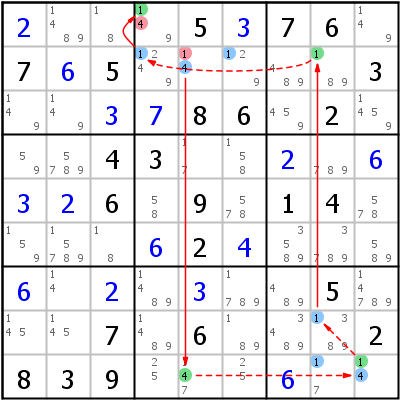

HoDoKu Lösungstechnik-Index: Beispiel für "Grouped Alternate Inference Chain Type 2"

Originales Sudoku:
....5.76.7.5.....3....86.2...43.......6.9.14.....2...........5...7.6...2839......
Verwenden Sie die folgende Zeile um das Sudoku in HoDoKu zu laden:
:0711:14:+2...5+376.7+65.....3..+3+786.2...43..+2.+6+3+26.9.14....+62+4...+6.+2.+3..5...7.6...2839...+6..:819 141 142 746 769 584 586 194 494 196 796 799:125 414:
Die folgende Darstellung kann per Zwischenablage in die meisten Sudoku-Programme eingefügt werden:
.----------------.-----------------.-------------------. | 2 1489 18 | 149 5 3 | 7 6 149 | | 7 6 5 | 1249 14 129 | 489 189 3 | | 149 149 3 | 7 8 6 | 459 2 1459 | :----------------+-----------------+-------------------: | 59 5789 4 | 3 17 158 | 2 789 6 | | 3 2 6 | 58 9 578 | 1 4 578 | | 159 15789 18 | 6 2 4 | 3589 3789 589 | :----------------+-----------------+-------------------: | 6 14 2 | 1489 3 1789 | 489 5 14789 | | 145 145 7 | 1489 6 189 | 3489 1389 2 | | 8 3 9 | 25 147 25 | 6 17 14 | '----------------'-----------------'-------------------'
Darstellung des Lösungsschrittes:
.----------------.--------------------.---------------------. | 2 1489 18 | *1-49 5 3 | 7 6 149 | | 7 6 5 | *1249 *-14 *129 | 489 *189 3 | | 149 149 3 | 7 8 6 | 459 2 1459 | :----------------+--------------------+---------------------: | 59 5789 4 | 3 17 158 | 2 789 6 | | 3 2 6 | 58 9 578 | 1 4 578 | | 159 15789 18 | 6 2 4 | 3589 3789 589 | :----------------+--------------------+---------------------: | 6 14 2 | 1489 3 1789 | 489 5 14789 | | 145 145 7 | 1489 6 189 | 3489 *1389 2 | | 8 3 9 | 25 *147 25 | 6 *17 *14 | '----------------'--------------------'---------------------' Grouped AIC 4- r2c5 =4= r9c5 -4- r9c9 -1- r89c8 =1= r2c8 -1- r2c456 =1= r1c4 -1 => r2c5<>1, r1c4<>4
Copyright © 2008-12 von Bernhard Hobiger
Zuletzt geändert am 5. Mai 2025 von shorty#3746
(basierend auf dem 1to9only Github-Repo)
Alles Material auf dieser Site unterliegt der GNU FDLv1.3.